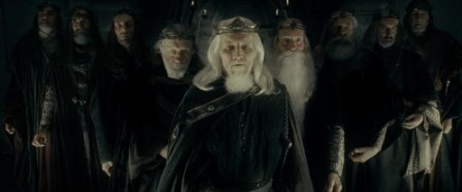
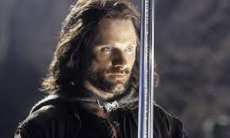
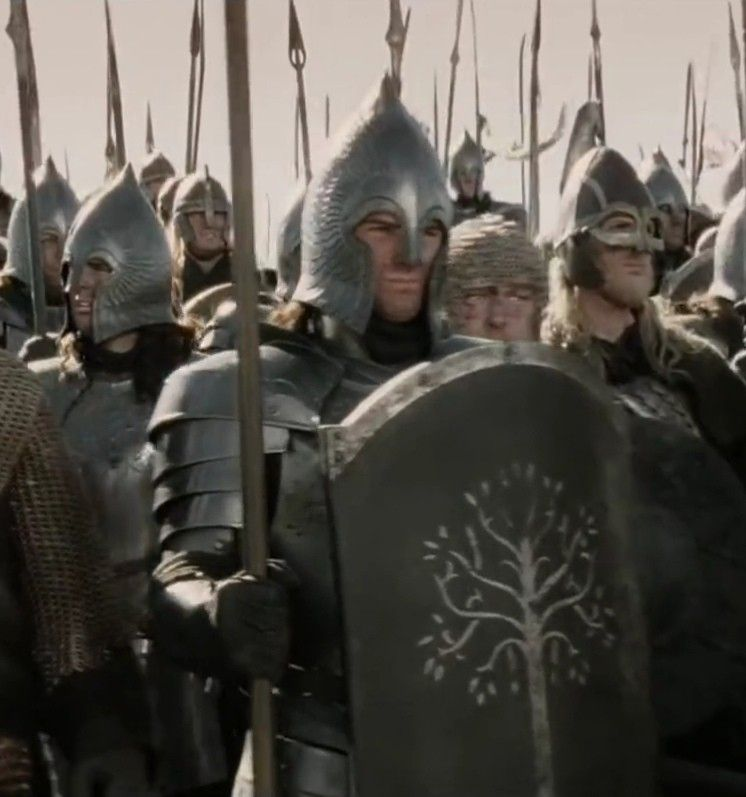
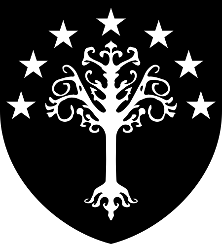

İnsanlar
  
İnsanlar ölümlü bir ırktır. Yüzüklerin Efendisi romanının konusunun geçtiği Üçüncü Çağ’ın sonlarında, özgür insan halklarının çoğunluğu Gondor ve Rohan’da yaşıyorlardı. Ayrıca Bree’de, Esgaroth’ta, Drúadan ormanında ve buzlu Forochel diyarında da insanlar yaşıyordu. Kötü güçlere hizmet eden insan halkları, Bozdiyar, Rhûn, Harad ve Umbar ülkelerinde yaşıyordu. Ayrıca, insanlar İkinci Çağ’da Númenor adasında yaşadılar. Ada denize batırıldığında, sadece Valara bağlı olanlar kurtuldu ve Orta Dünya’da Gondor ve Arnor krallıklarını kurdular. İnsanlar içinde en meşhurları arasında Beren Erchamion ve Túrin Turambar yer almaktadır.
Rohan

Rohan, J. R. R. Tolkien'in kurgusal Orta Dünya evreninde bir ülke. Orta Dünya kıtasındadır. Başlarda Gondor'un sınırları içerisinde kalan Ak Dağlar'ın kuzeyinde bulunan Calenardhon bölgesi Üçüncü Çağ'ın 2510 yılında Vekilharç Cirion tarafından Kuzeyli Eorl ve halkına armağan edildi. Kuzeyin engin diyarından adamlarına önderlik ederek Gondor'un yardımına gelen Eorl, halkı ile birlikte kendilerine hediye edilmiş topraklara yerleşti. Eski Gondor ile yeni Rohan arasındaki yıllar sürecek müttefikliğin yemini bu olayla birlikte edildi.
Rohan tarihi karmaşa ve savaş ile doludur. Ak Dağlar'dan gelen orklar, batıda bulunan Bozdiyarlılar ve son olarak kuzeydeki Orthanc'da bulunan Saruman ile mücadele, Rohan tarihinin önemli bölümlerini oluşturur.
Yine de Rohan Kralları'nın soyu Eorl'ün zamanından Yüzük Savaşları'na ve ötesine uzanır. Rohan Kralları Eorl oğlu Brego'nun inşa ettirdiği Edoras'taki Altın Konak (Tekev)'ta ikamet ederlerdi. Rohan halkı Gondor'un en büyük zaruret anında Eorl'ün Yemini'ni yerine getirerek kadim müttefiklerine yardım etmek üzere atlarını Pelennor Çayırları Savaşı'na sürmüşlerdir.
Gondor
İkinci Çağ'ın 3320 yılında kuruldu ve Dördüncü Çağ başladığında varlığını hala sürdürmekteydi.[1] Konumu, Mordor'un batısında, Belfalas Körfezi'ndedir.[2] Gondor isminin anlamı "taş ülkesi"dir. Gondor ülkesi ayrıca Güney Krallığı, Taş Ülke olarak da bilinirdi.[1]
Númenor'un Yıkılışı'nın ardından Elendil tarafından Orta Dünya'da kurulan iki görkemli insan krallığından biridir.[1] Diğeri kuzeyde bulunan Arnor'dur.[1] Gondor, ilk kurulduğu yıllarda Elendil'in oğulları Isildur ve Anárion tarafından yönetilmekteydi. Elendil ve Anárion'un Barad-dûr Kuşatması'nda yaşamını yitirmesinden ve, kısa süre sonra Isildur'un Ferah Çayırlar'da öldürülmesinin ardından Gondor krallığı Anárion oğlu Meneldil'e geçti.[1] Bu bakımdan Gondor kralları, Anárion'un soyundan gelmektedir ve Eärnur dönemine kadar babadan oğula geçmiştir.[1]
III. Çağ'ın 2050 yılında Eärnur'un yitirilişinin ardından Gondor'un hükümdarlığı Kral'ın vekilharcı Mardil Voronwë'ye geçmiştir. Eärnur'un ölümü kesin bir ölüm değildi; bu sebepten ötürü Mardil ve ardından gelen vekilharçlar "kral geri dönene kadar" hükümdarlık yapma kuralına uydular. Bu süre yaklaşık olarak bin yıl boyunca devam etti. Ta ki III. Çağ'ın 3019 yılında Anárion'un büyük kardeşi Isildur'un soyundan gelen Aragorn II - Elessar, ortaya çıkıp Gondor tahtındaki hakkını iddia edene dek.